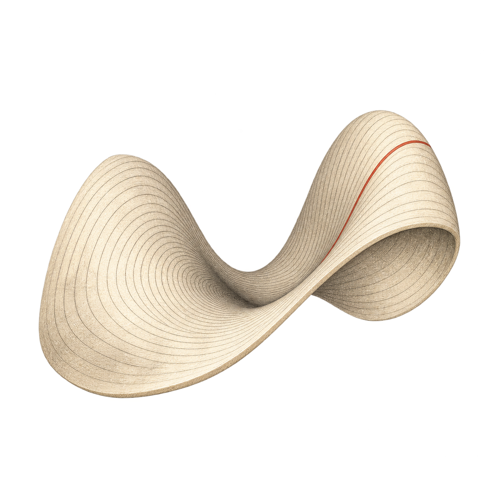
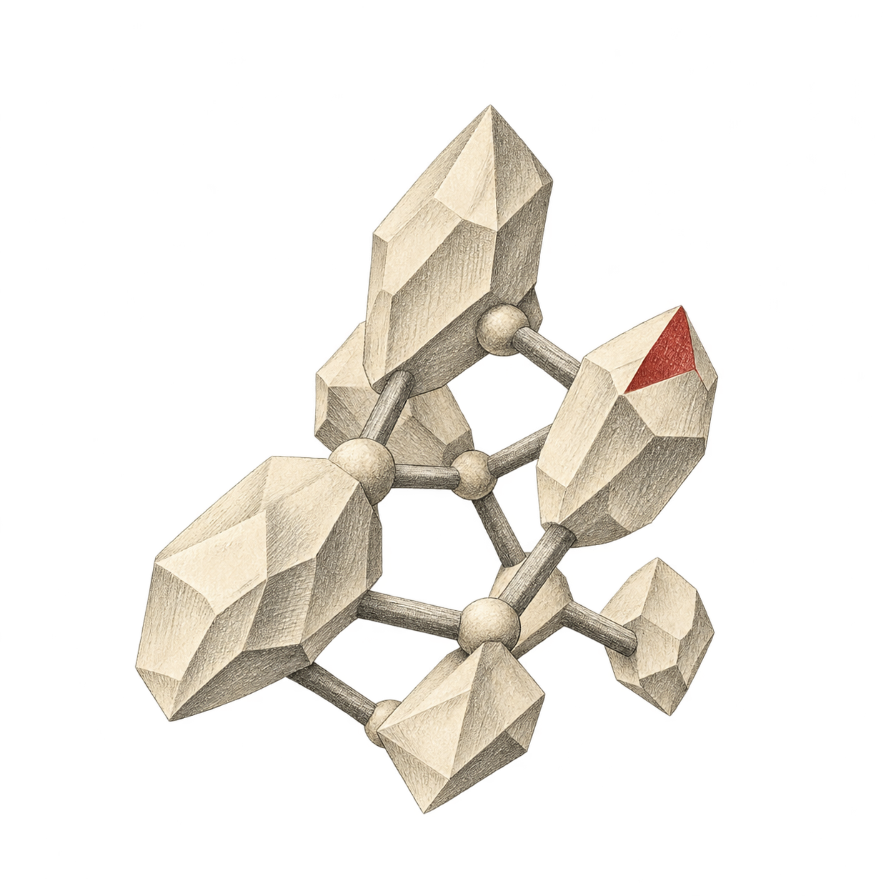
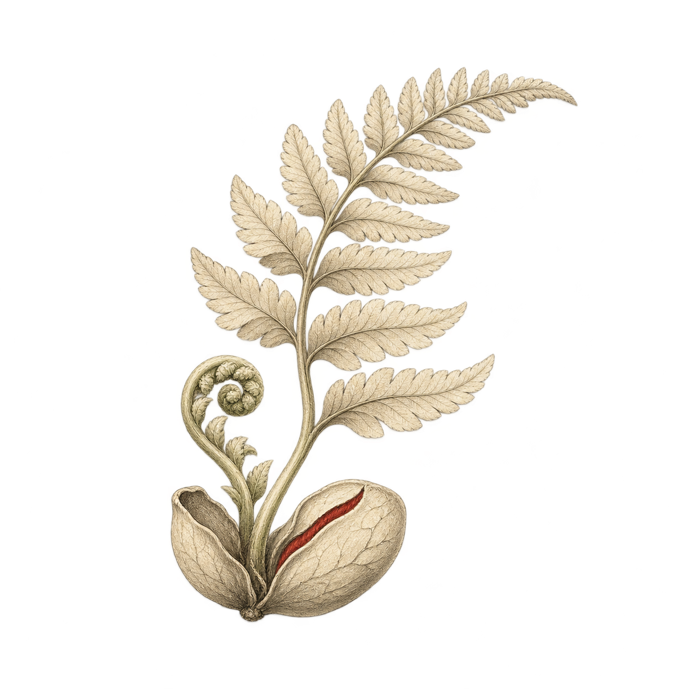
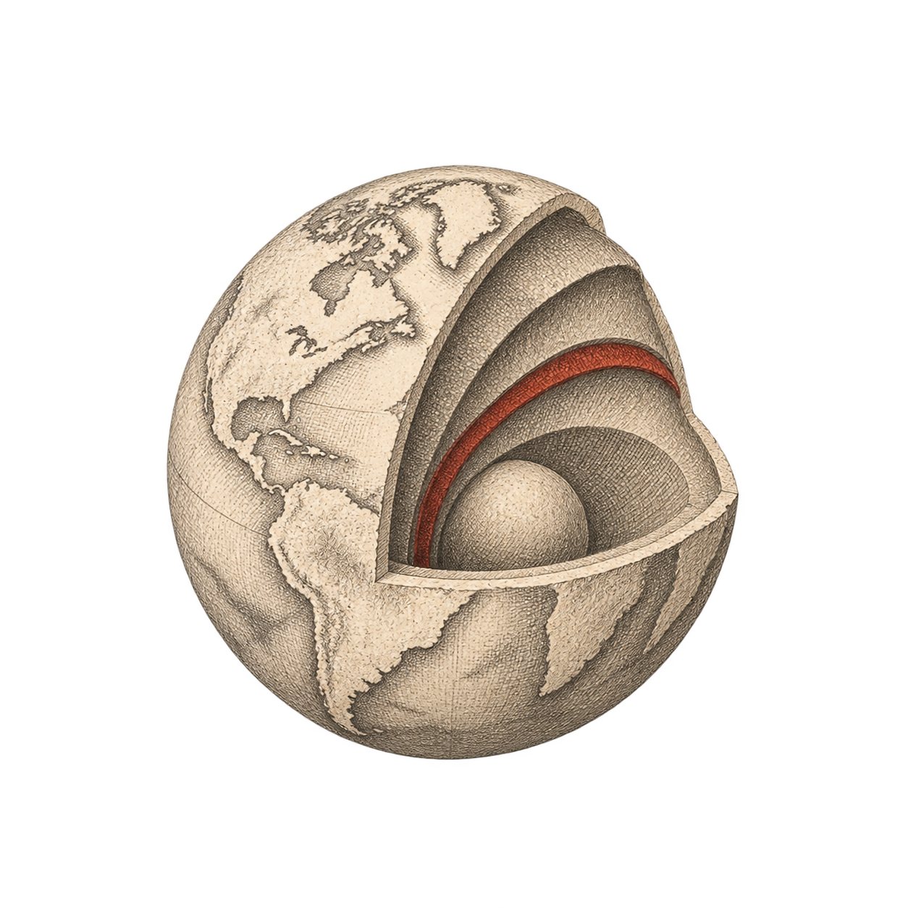
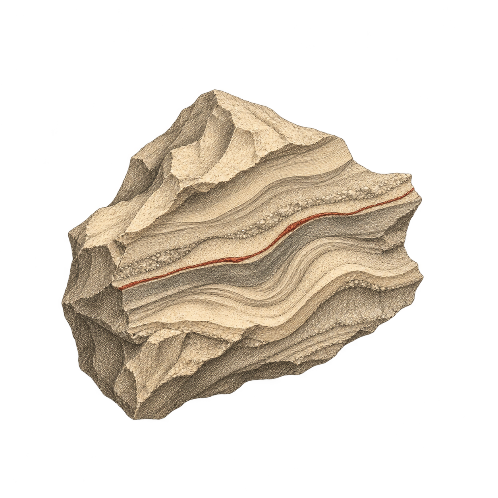
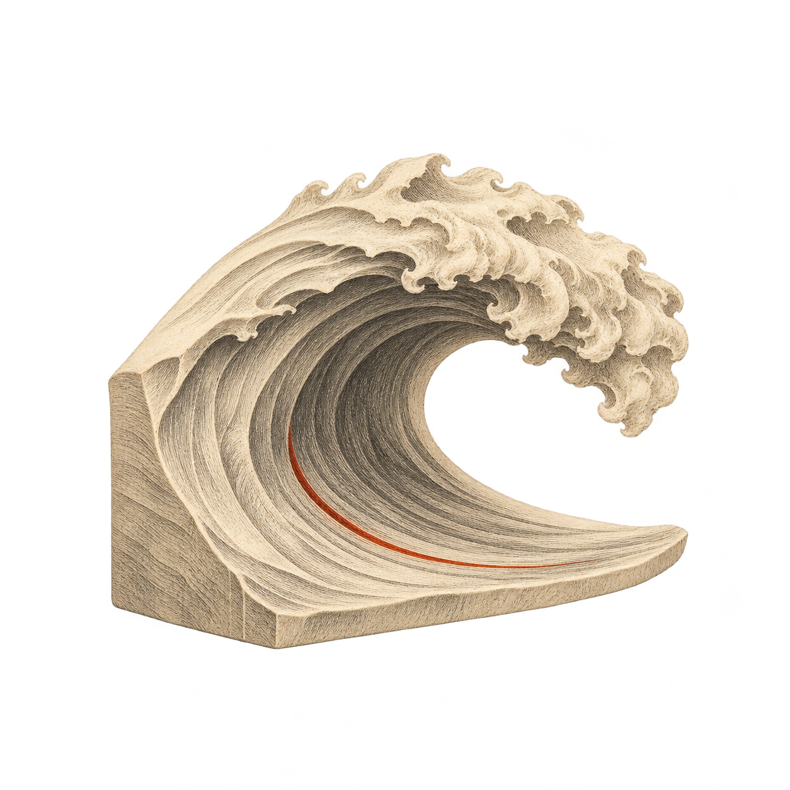
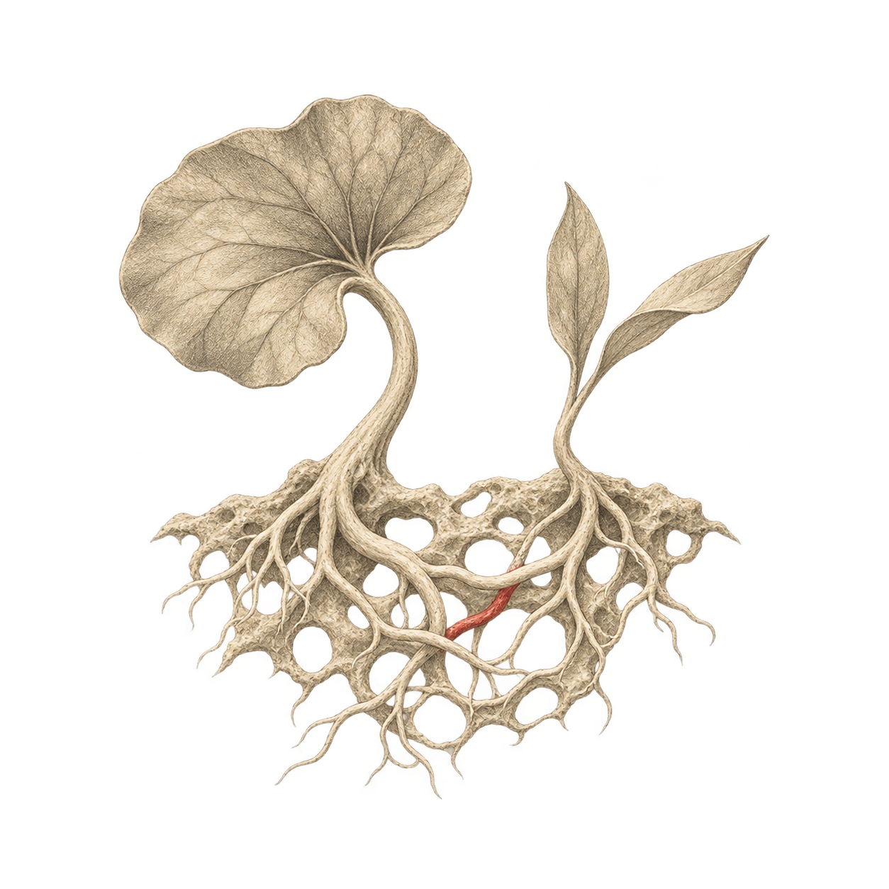
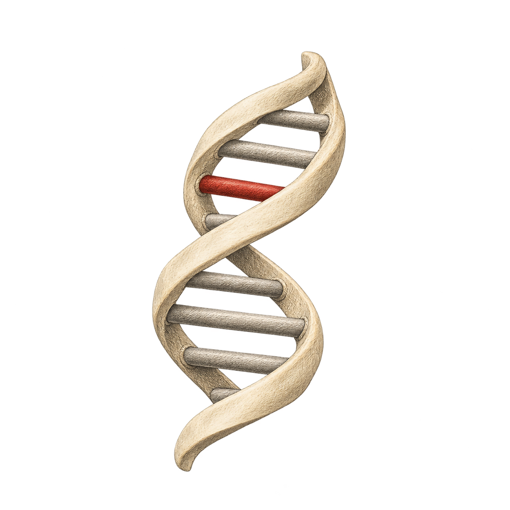
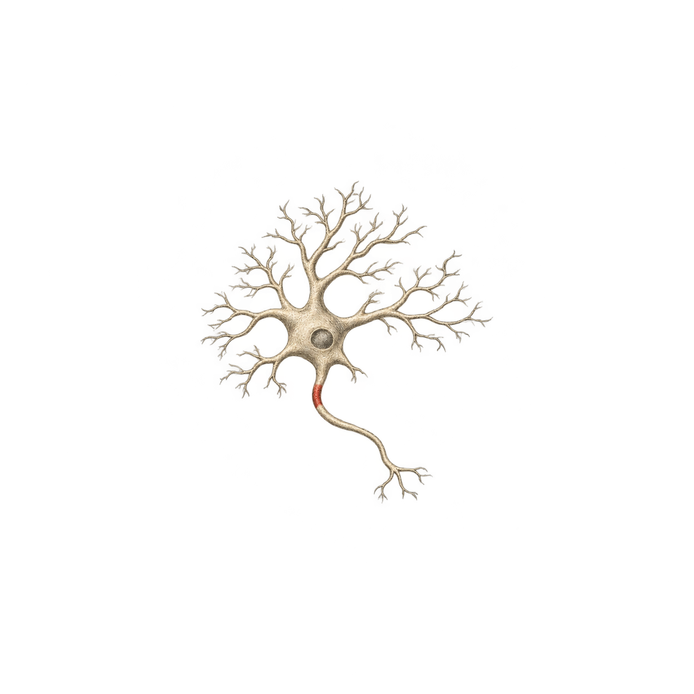

Ben Ebsworth · Blog / Lab artwork studies
Science and living systems Ten separately generated concepts in graphite, warm ivory and restrained red. Four map to existing topic labels; six are proposed studies. These are illustrative metaphors, not scientific diagrams or evidence of category coverage.
The selected family uses Neuroscience revision 2; its first original remains preserved. Light/dark images below use unchanged original files. Exact margins and faint alpha residue are documented in the review.
Manifest Exact prompts Image review Usage notes Light contact sheet Dark contact sheet 01 / Existing topic
Mathematics Carved folded mathematical surface.
1262 × 1246 px · PNG with verified alpha
Download original PNG

Warm ivory review surface Dark review surface 02 / Existing topic
Chemistry Crystalline molecular assembly.
1254 × 1254 px · PNG with verified alpha
Download original PNG

Warm ivory review surface Dark review surface 03 / Existing topic
Life Sciences Fern and seed structure.
1254 × 1254 px · PNG with verified alpha
Download original PNG

Warm ivory review surface Dark review surface 04 / Existing topic
Earth & Space Cutaway terrestrial globe.
1254 × 1254 px · PNG with verified alpha
Download original PNG

Warm ivory review surface Dark review surface 05 / Proposed category study
Geology Layered rock specimen.
1254 × 1254 px · PNG with verified alpha
Download original PNG

Warm ivory review surface Dark review surface 06 / Proposed category study
Oceanography Breaking wave cross-section.
1254 × 1254 px · PNG with verified alpha
Download original PNG

Warm ivory review surface Dark review surface 07 / Proposed category study
Meteorology Cloud and barometric instrument.
1254 × 1254 px · PNG with verified alpha
Download original PNG
Warm ivory review surface Dark review surface
08 / Proposed category study
Ecology Interdependent leaf/root ecosystem.
1254 × 1254 px · PNG with verified alpha
Download original PNG

Warm ivory review surface Dark review surface 09 / Proposed category study
Genetics Twisted dna ladder motif.
1254 × 1254 px · PNG with verified alpha
Download original PNG

Warm ivory review surface Dark review surface 10 / Proposed category study
Neuroscience Branching neuron.
1254 × 1254 px · PNG with verified alpha
Download original PNG

Warm ivory review surface Dark review surface 10 concepts · 10 selected images · 11 preserved generated originals. All six proposed labels remain studies. Browser rendering, consuming-route adoption and release acceptance are unverified.
Source baseline 92cd2eeae1a289f727b6d7bcb2beb9ddbe44ab76. No production registry, shared styling, approved symbol or official technology logo is changed.
Preserved Neuroscience revision 1 · Revision comparison